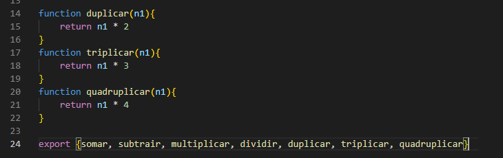
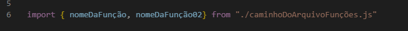
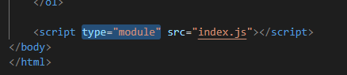

Importando e Exportando Módulos JavaScript
Serve como uma a folha de estilo 'reset' do CSS.
É um trecho de código escrito uma única vez que pode ser utilizado em vários pontos do projeto sem precisar ser reescrito - faz a declaração em uma única página, linka no projeto e quando precisar usar é só fazer a chamada em qualquer ponto do código.
ATENÇÃO:
- Se houver mais de uma função, o export deve ficar em baixo de tudo e dentro ter o nome de todas as funções.
EX:

- ANATOMIA do import (deve ser escrito no arquivo js que quiser importar as funções): OBS:NÃO ESQUECER DO .JS

- Especificar o tipo de importação na chamada do arquivo JS - dentro do HTML.
EX:
